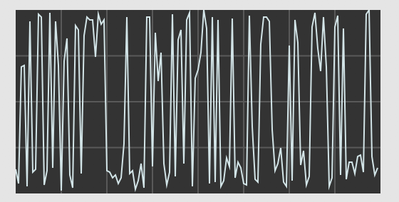
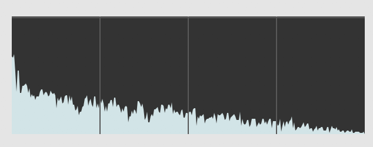

A trumpet plays middle C. A violin plays middle C. They are playing the same note, yet why do they sound different? The answer is that these two instruments have different timbres. (Prounounced "TAM-ber", not "TIM-ber" or "TIM-bruh".)
As discussed in the Physics of Sound topic, every real-world pitched tone is composed of multiple sine waves. The lowest sine wave is called the "fundamental frequency"; for middle C, (aka C4) this is around 261.63 Hz. The higher sine waves are all at integer multiples of the fundamental frequency: the first overtone (the second harmonic) is 261.63 x 2 = 523.26 Hz (aka C5), the second overtone (the third harmonic) is 261.63 x 3 = 784.89 Hz (aka G5), and so on to infinity.
The reason why the trumpet and the violin sound different has everything to do with these overtones. A pitch's timbre is entirely determined by the relative loudnesses (aka amplitudes) of the sine waves that compose it, and the way that those amplitudes vary over time. So, one might imagine that for one instrument, the 2nd, 4th, and 7th overtones are particularly loud, while for another instrument, the 3rd, 4th, and 11th overtones are particularly loud, and so the two instruments would end up sounding quite different.
But how do we know exactly which overtones are loud, and which ones are not? The answer can be found by visualizing the sound in the frequency domain.
The French mathematician Jean-Baptiste Joseph de Fourier—who lived in the late 18th and early 19th centuries, contemporaneously with Beethoven—demonstrated that any periodic wave can be expressed as the sum of harmonically related sinusoids, each with its own amplitude and phase. Given a digital representation of a periodic wave, one can employ a formula known as the discrete Fourier transform (DFT) to calculate the frequency, phase, and amplitude of its sinusoidal components. Essentially, the DFT transforms a time-domain representation of a sound wave into a frequency-domain spectrum. This spectrum can also be transformed back into a time-domain waveform.
Normally, we look at sounds in the time domain: amplitude on the y axis, and time on the x axis. We line up a bunch of samples on the x axis, graph their amplitudes, and the result looks something like this:

A sound represented in the time domain.
In the frequency domain, the picture is different. On the x axis, we have what are called "frequency bins". These are evenly-spaced frequencies, with 0 Hz on the leftmost side of the graph, and the Nyquist frequency (one half the sampling rate) on the rightmost side of the graph. Unlike the time domain—in which the x axis can theoretically stretch to infinity—the frequency domain is bounded by 0 Hz on the left and the Nyquist frequency on the right. On the y axis, we have the relative magnitude at that frequency. Unlike in the time domain, where amplitudes are bounded between -1 and 1; in the frequency domain, magnitudes are bounded between 0 on the low end, and some much higher number on the high end. The value of this higher bound for the magnitudes is determined by the the number of bins in the Fourier Transform.
Here is an image of a sound in the frequency domain, up to the Nyquist frequency. A picture like this is often called a "frame":

A "frame" of a DFT. The y axis is magnitude; the x axis is frequency.
At this point, you should be comfortable with how sound is represented in the time domain and the frequency domain. But how do you translate from one to the other? The answer is the Fourier Transform.
The actual mathematics of the Fourier Transform are beyond the scope of this lesson. (See the Additional Resources section if you're really looking to get into the weeds.) However, there are a few general principles you should understand about how the Fourier Transform works.
First, there's a number of ways to implement a Fourier Transform. The most common in computer music is the "Fast Fourier Transform", usually abbreviated "FFT". The FFT is a computationally optimized way of computing a DFT, but it also requires a few constraints on the Fourier Transform itself, described below.
Before running a Fourier Transform, you need to determine the size of the FFT frame, which—as stated in the previous section—is the same thing as determining how many frequency bins you want to create. In the FFT, your frame size must be a power of 2: the most common sizes for audio are 1024, 2048, and 4096. That means, your FFT frame will have 1024 bins, 2048 bins, or 4096 bins.
Since we know that the frequency bins are evenly spaced, between 0 and the sampling rate, we can easily calculate the frequency at each bin using the following formulae:
bin spacing = sampling rate / FFT frame size
bin frequency = bin index * bin spacing
As an example, with a sampling rate of 44100, and an FFT frame size of 2048, then our bin spacing will be 44100 / 2048 = 21.533 Hz. That means our 0th bin has a frequency of 21.533 x 0 = 0 Hz, our 1st bin has a frequency of 21.533 x 1 = 21.533 Hz, our 2nd bin has a frequency of 21.533 x 2 = 43.07 Hz, and so on up to 21.533 x 1023 = 22028.26 Hz. The next bin represents the magnitude of energy at the Nyquist frequency, and the subsequent bins contain the magnitude at negative frequencies from the Nyquist frequency back up to 0. Because, in an audio signal, the negative frequencies generally mirror the positive frequencies, we usually visualize only the positive frequencies up to the Nyquist frequency, as in the graphic above.
Given the equations above, you might wonder why we don't pick a super-large FFT size, like 4096 or even 8192 or 16384, all the time. After all, the greater your FFT size, the more frequency bins—and therefore the greater "frequency resolution"—you will have, no?
The issue is that, in order to generate an FFT of a given frame size, you need to record and save the exact same number of samples in the time domain. So, if you want to create an extremely large FFT—like one with 16384 frequency bins—that means you need to record 16384 samples of data. At a sampling rate of 44100 Hz, that's 16384 / 44100 = 0.37 seconds of music. A lot can happen in 0.37 seconds! Most instruments can play at least four distinct notes in that span, if not many more.
So, let's say you wanted to use an FFT to do pitch detection (i.e. guessing the pitch an instrument is playing). If your musician plays too quickly, you'll actually get multiple notes inside your FFT frame, but it will look as if those notes were played simultaneously, even though they weren't. Maybe that's an acceptable side effect, but chances are you want to have some sense of when each note was played.
Do you see the conundrum? In order to get more resolution in the frequency domain, you have to sacrifice resolution in the time domain. But if you go the other way and have more FFT frames per second—i.e. more resolution in the time domain—you'll end up with a greater bin spacing, thus sacrificing resolution in the frequency domain. This tradeoff is unavoidable. As a consequence, you should think carefully about your technical needs as well as the musical situation when choosing an FFT frame size.